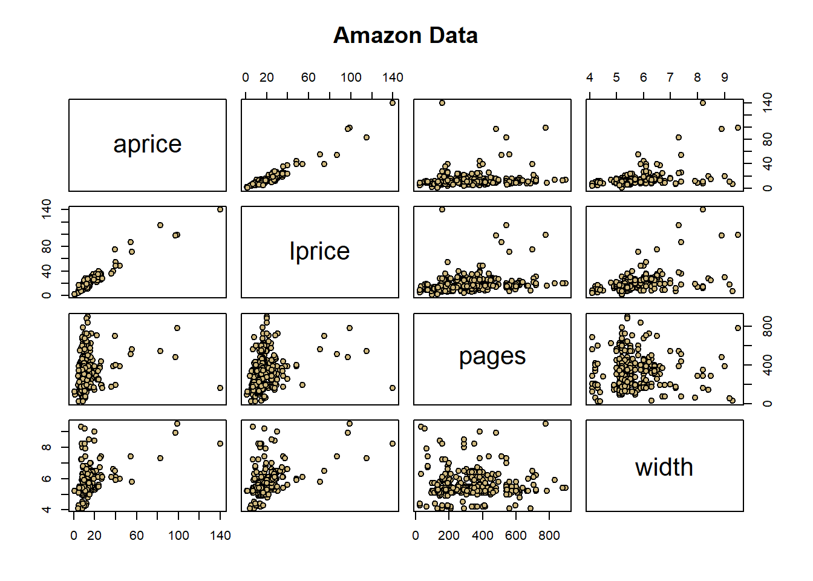

In this lesson, we will perform t-tests for individual regression parameters in R. To do this, we’ll use a dataset about book prices from Amazon. The data consists of data on \(n = 325\) books and includes measurements of:
aprice: The price listed on Amazon (dollars)
lprice: The book’s list price (dollars)
weight: The book’s weight (ounces)
pages: The number of pages in the book
height: The book’s height (inches)
width: The book’s width (inches)
thick: The thickness of the book (inches)
cover: Whether the book is a hard cover or paperback.
And other variables…
We’ll explore a model that will use lprice, pages, and width to predict aprice. But first, we’ll do some work cleaning and wrangling the data.
Data cleaning and wrangling
Let’s read in the data and see if there are any missing values.
library(RCurl) #a package that includes the function getURL(), which allows for reading data from github.library(ggplot2)library(testthat)amazon =read.csv("https://raw.githubusercontent.com/CUBuffs/Statistical-Learning-/main/Modern%20Regression%20Analysis/Datasets/amazon.txt" ,sep ="\t")names(amazon)
aprice lprice pages width
Min. : 0.77 Min. : 1.50 Min. : 24.0 Min. :4.100
1st Qu.: 8.60 1st Qu.: 13.95 1st Qu.:208.0 1st Qu.:5.200
Median : 10.20 Median : 15.00 Median :320.0 Median :5.400
Mean : 13.33 Mean : 18.58 Mean :335.9 Mean :5.585
3rd Qu.: 13.13 3rd Qu.: 19.95 3rd Qu.:416.0 3rd Qu.:5.900
Max. :139.95 Max. :139.95 Max. :896.0 Max. :9.500
NA's :1 NA's :2 NA's :5
weight height thick cover
Min. : 1.20 Min. : 5.100 Min. :0.1000 Length:325
1st Qu.: 7.80 1st Qu.: 7.900 1st Qu.:0.6000 Class :character
Median :11.20 Median : 8.100 Median :0.9000 Mode :character
Mean :12.49 Mean : 8.163 Mean :0.9077
3rd Qu.:16.00 3rd Qu.: 8.500 3rd Qu.:1.1000
Max. :35.20 Max. :12.100 Max. :2.1000
NA's :9 NA's :4 NA's :1
which(is.na(df$lprice))
[1] 205
205
From the summary, we can see that there are missing values in the dataset, coded as NA. There are many ways to deal with missing data. Suppose that sample unit \(i\) has a missing measurement for variable \(z_j\). We could:
Delete sample unit \(i\) from the dataset, i.e., delete the entire row. That might be reasonable if there are very view missing values and if we think the values are missing at random.
Delete the variable \(z_j\) from the dataset, i.e., delete the entire column. This might be reasonable if there are many many other missing values for \(z_j\) and if we think \(z_j\) might not be necessary for our overall prediction/explanation goals.
Impute missing values by substituting each missing value with an estimate.
For more information on missing values, see this resource.
Since most of our columns/variables are not missing values, and since these variables will be useful to us in our analysis, option 2 seems unreasonable. Let’s first try option 3: impute the missing values of lprice, pages, width, weight, height, and thick with the mean of each.
aprice lprice pages width
Min. : 0.77 Min. : 1.50 Min. : 24.0 Min. :4.100
1st Qu.: 8.60 1st Qu.: 13.95 1st Qu.:208.0 1st Qu.:5.200
Median : 10.20 Median : 15.00 Median :320.0 Median :5.400
Mean : 13.33 Mean : 18.58 Mean :335.9 Mean :5.585
3rd Qu.: 13.13 3rd Qu.: 19.95 3rd Qu.:416.0 3rd Qu.:5.900
Max. :139.95 Max. :139.95 Max. :896.0 Max. :9.500
weight height thick cover
Min. : 1.20 Min. : 5.100 Min. :0.1000 Length:325
1st Qu.: 7.80 1st Qu.: 7.900 1st Qu.:0.6000 Class :character
Median :11.20 Median : 8.100 Median :0.9000 Mode :character
Mean :12.49 Mean : 8.163 Mean :0.9077
3rd Qu.:16.00 3rd Qu.: 8.500 3rd Qu.:1.1000
Max. :35.20 Max. :12.100 Max. :2.1000
This removed the NA values, and substituted them with the mean of all the other values in the corresponding column. This isn’t always a good idea, however. Let’s take a look at a scatter plot of the Amazon price as a function of the list price (with points colored according to whether they are hardcover of paperback).
Arguably, there are many outliers here, but some of them won’t really make a difference with respect to the fit of a linear model. However, one clearly will, namely the grey point that has a very high Amazon price and a relatively low list price. We might call this point an influential point, since it would influence the fit of the regression model. Let’s see if this is the value that we imputed:
which(df$aprice >100& df$lprice <50)
[1] 205
amazon[205,]
Title Author List.Price Amazon.Price Hard..Paper NumPages
205 The 80 10 10 Diet Graham NA 118.21 P 340
Publisher Pub.year ISBN.10 Height Width Thick Weight..oz.
205 foodnsport Press 2006 1893831248 8.9 6 0.8 16
205
It is! This suggests that the imputation method probably did more harm than good, since it created a list price value that does not follow the trend in the data. Of course it’s possible that this is the true list price for this book, but given that Amazon rarely has this much of a gap between its prices and list prices is a red flag! So instead, we’ll remove the unit. Note though, that in a real data analysis, we should investigate the cause of the missing values, and perhaps try a more sophisticated imputation method if we think the values are not missing at random. Also, we should do similar explorations to see whether the other imputations that we performed cause similar problems. For now, we’ll leave the other variables as is.
pairs(df[,1:4], main ="Amazon Data", pch =21, bg =c("#CFB87C"))

Some appear linear, but outliers exist. In a full analysis, we would work on identifying those outliers and decide why they were so different than other measurements. For the purposes of learning something about statistical inference in regression, we’ll continue with the data as is; but note that outliers can impact statistical significance.
Linear modeling
Let’s model the Amazon price as a function of the list price, the number of pages, and the width of the book. When conducting hypothesis tests, let’s set \(\alpha = 0.05\).
Notice that the p-value for this test is \(0.285\), which is not less than \(\alpha\). Thus, the parameter associated with width is not statistically significant at the \(\alpha = 0.05\) level. As such, we do not have evidence that that parameter is different from zero, and, equivalently, we don’t have statistical evidence to suggest that width should stay in the model.
Interestingly, the number of pages is statistically significant, but the magnitude, i.e., size of the association, of the parameter estimate is much lower than the estimate for the width:
So, it may be that pages is statistically significant, but practically insignificant. To explore this, let’s interpret the pages estimate: (assuming the model is roughly correct), adjusting for the list price and width, for every additional page added to a book, we can expect the amazon price to decrease by \(\$0.006\), less than a penny. That is, an increase of 100 pages - a relatively large difference - is associated with a \(\$0.60\) increase. Is this worth keeping in the model, even though it’s statistically significant? It depends! Some important questions are:
Are researchers counting book pages themselves, and thus spending time and money on it, or is this page data easily available?
How precise do our predictions need to be?
If researchers counting book pages themselves, and if predictions don’t need to be all that precise, using pages as a predictor might be more trouble than it’s worth! However, often, page information is available from publishers, and competing with Amazon prices might require a highly precise model. So, researchers might opt to keep pages in the model. In short, answering this question requires knowledge of the domain area and data collection process!